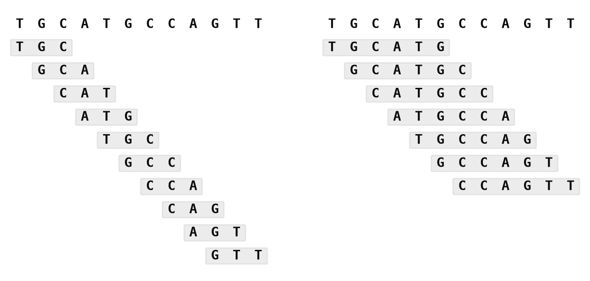
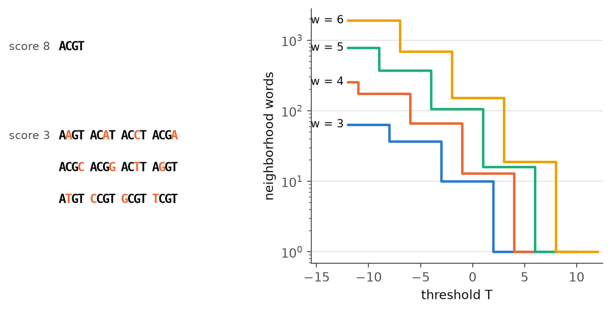
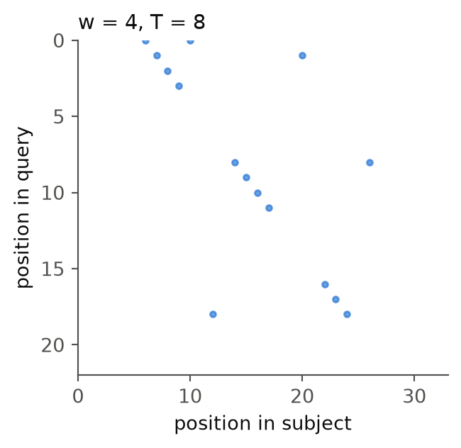
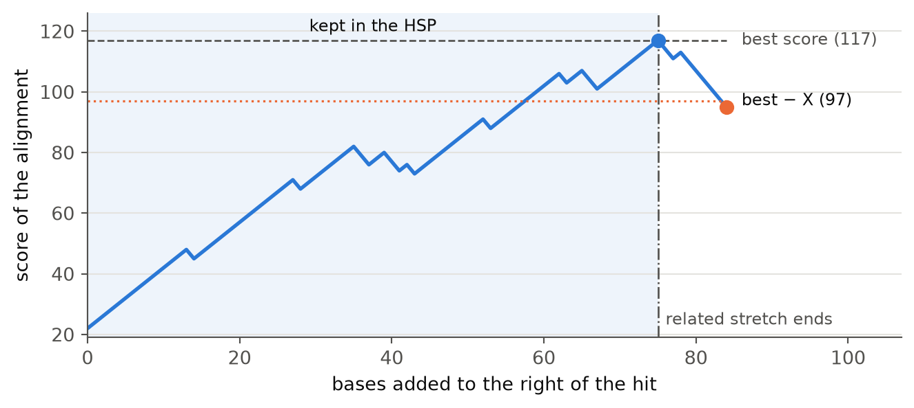
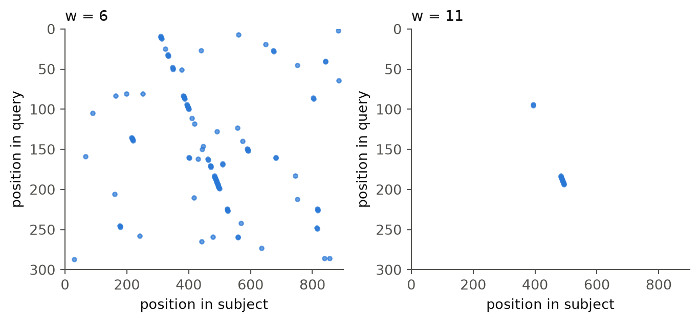
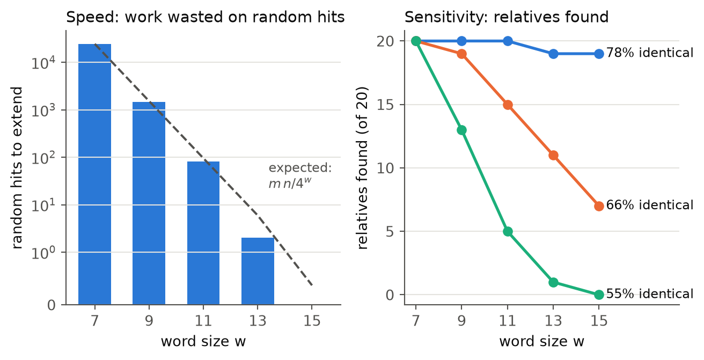
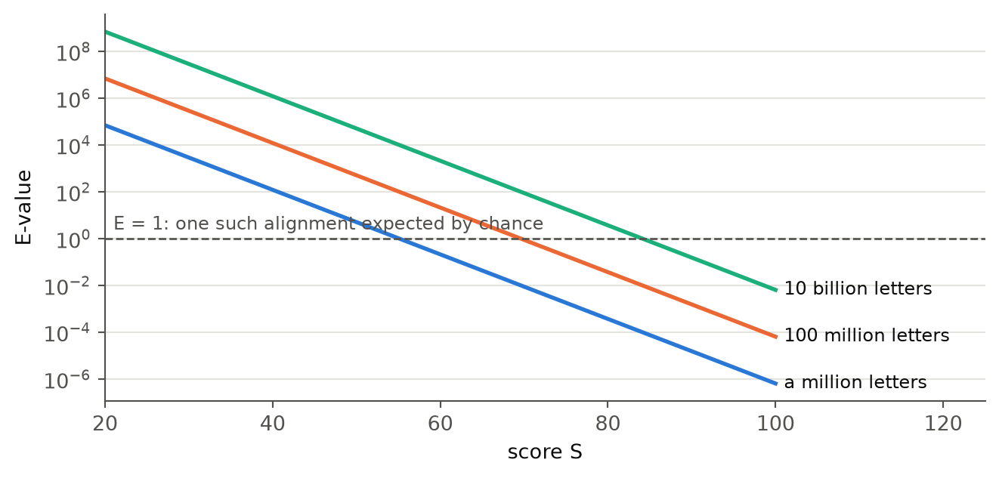
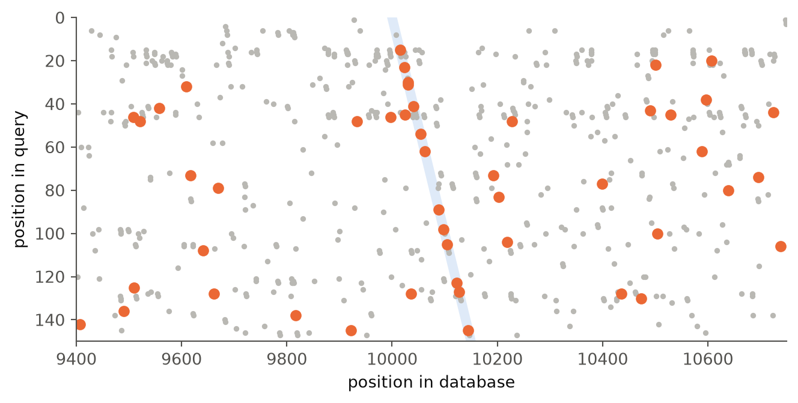

56 BLAST
If you have a sequence, BLAST finds the sequences in a large database that are similar to it, and it does so in seconds rather than days. This chapter explains how. BLAST is built from ideas you already know from Chapter 53, combined with a shortcut that gives up a guarantee in exchange for speed, and a piece of statistics that tells you how much to trust what it finds.
Why not just align against everything?
In Chapter 53 you met local alignment and the Smith-Waterman algorithm (Smith and Waterman, 1981), which is guaranteed to find the best local alignment of two sequences. So why not align your sequence to every sequence in the database and keep the best ones?
The answer is arithmetic. Smith-Waterman fills in a table with one cell for every pair of positions, one from each sequence. Aligning a gene of 1,000 bases to another of 1,000 bases means filling in a million cells, which is nothing for a computer. But a database is not one sequence. The human genome alone is about 3.1 billion bases long, so aligning a single gene against it means filling in \(1000 \times 3.1 \times 10^9 = 3.1 \times 10^{12}\) cells. A computer that fills in a hundred million cells per second needs 31,000 seconds, more than eight and a half hours, and NCBI’s databases hold the genomes of a great many species besides. Now picture an NCBI server answering thousands of searches every hour.
Something has to give, and what BLAST gives up is the guarantee. BLAST is a heuristic: a shortcut that usually finds the best alignments, but is not promised to. In exchange it is very fast. The shortcut rests on one observation about biology. If two sequences are related, the alignment between them almost always contains a few short stretches where the two sequences are identical or nearly so. So rather than aligning everything to everything, BLAST first looks for those short stretches, and only spends time aligning where it finds one. The earlier FASTA program (Lipman and Pearson, 1985) had already used this idea. BLAST, the Basic Local Alignment Search Tool (Altschul et al., 1990), made it faster and gave it a solid statistical footing. The paper describing it is one of the most cited scientific papers ever written.
The original BLAST
The original BLAST works in four steps:
- Chop your sequence, the query, into short overlapping words, and list every word that scores well against one of them.
- Scan the database for those words. Each occurrence is a hit.
- Extend each hit in both directions into a longer alignment, and stop when the score starts falling.
- Decide whether the alignments found are better than what you would expect by chance.
The figures and numbers in this chapter come from a small Python version of each step, running behind the page. It is slow and simple where the real BLAST is fast and clever, but it does the same thing. We start with DNA, where everything is simplest, and turn to proteins in the section on protein search.
Step 1: overlapping words
To chop a query into words of length \(w\), slide a window of width \(w\) along it, one base at a time. A query of length \(L\) has \(L - w + 1\) such words, because the last word must start \(w - 1\) bases before the end, or it would be too short. Our example query, TGCATGCCAGTTACGGATCAAG, has 22 bases and so 19 words of length 4. A gene of 1,000 bases has 990 words of length 11. Figure 56.1 shows the words of the first twelve bases for two word sizes. Each base belongs to up to \(w\) words, and every word overlaps the next one in all but one base.
Looking only for exact copies of the query’s words is one option. But a word in a related sequence may differ from the query’s word in a base or two, and BLAST lets you decide how different it may be. To do that, it scores two words against each other, position by position, with a score matrix like the ones in the pairwise alignment chapter. The standard DNA scores in blastn are 2 when two bases match and −3 when they do not. A word of length \(w\) with \(k\) mismatches therefore scores \(2(w - k) - 3k = 2w - 5k\) against the query word: ACGT scores 8 against itself, 3 against AGGT, and −12 against TCGA.
The neighborhood of a word is every word that scores at least some threshold \(T\) against it. At \(T = 3\), the neighborhood of ACGT holds ACGT itself and the twelve words that differ from it in exactly one base: three other bases at each of four positions. The left side of Figure 56.2 shows them, with the changed base in orange. The right side shows how the size of the neighborhood depends on both settings. Lowering \(T\) lets in words with more mismatches, and the neighborhood grows in steps, one step for each extra mismatch allowed. For the same \(T\), a longer word has a bigger neighborhood, because there are more places for a mismatch to go.

Here is the trade-off that runs through the rest of this chapter. A big neighborhood (small \(w\), low \(T\)) means a related sequence is likely to contain at least one of the words, even if it has drifted far from the query. But it also means many more chance hits in unrelated sequences, and each of those takes time to check. A small neighborhood is fast but misses distant relatives. We measure this trade-off in the section on word size and threshold.
BLAST puts all the neighborhoods into one lookup table: for every word, it records the query positions it is a neighbor of. In Python, that is a dictionary from words to lists of positions. With \(T = 8\), the top score for a word of length 4, each neighborhood holds only the word itself, so the table just records where each of the query’s own words is: 19 words, each at its own position. With \(T = 3\), each word brings its twelve one-mismatch neighbors along, and the table grows to 180 words. The table is built once, from the query alone, before BLAST looks at the database at all.
Step 2: scanning the database
Now BLAST walks along each database sequence, the subject, one word at a time and looks each word up in the table. Looking up a key in a dictionary is very fast and takes about the same time no matter how big the dictionary is, which is why BLAST can afford to do it for every position in a database of billions of bases. Every time a word is found, BLAST notes a hit as a pair of positions \((i, j)\): where the word is in the query, and where it is in the subject.
Our query, scanned against the subject CCGTATTGCATGCAAGTTACGCATCAAGTTCGA with exact words of length 4, gives 15 hits. For 11 of them, the difference \(j - i\) is the same, 6. That difference is called the diagonal of a hit. If you draw the query down one side of a grid and the subject along the other, as in the alignment tables of Chapter 53, all hits with the same \(j - i\) lie on the same diagonal line through the grid, and they belong to the same ungapped alignment. Here, they mark where the subject contains a copy of the query starting 6 bases in. The few hits on other diagonals are chance matches of short words. Such a grid of hits is called a dot plot, and Figure 56.3 shows it for our query and subject. The gaps in the diagonal line are where the copy differs from the query.

Keep the diagonals in mind. They are the key to the improved BLAST of 1997.
Step 3: extending a hit
A hit is only a few bases. To see whether it is part of something bigger, BLAST extends it, one base at a time, first to the right and then to the left, adding the score of each new pair of bases. The extension has no gaps: it just walks along the diagonal.
When should it stop? The score goes up when the bases agree and down when they do not, so a single mismatch should not end the extension. BLAST remembers the best score it has seen so far and stops when the score has dropped more than some amount \(X\) below that best. Then it trims the alignment back to where the best score was. This is called the X-drop rule. Figure 56.4 shows it for a hit in a stretch of DNA where a subject is related to the query for 100 bases and unrelated after that. While the extension runs through the related stretch, matches outnumber mismatches and the score climbs, with small dips at each mismatch. Once it runs past the end into unrelated sequence, mismatches dominate, the score falls, and the extension stops when it is \(X\) below the best.

The result is a high-scoring segment pair, or HSP. For our small query and subject, extending the hit at the start of the diagonal gives an HSP with a score of 34 that covers the whole query:
TGCATGCCAGTTACGGATCAAG
||||||| ||||||| ||||||
TGCATGCAAGTTACGCATCAAGExtending every one of the 15 hits gives only 5 different HSPs. All hits on the main diagonal grow into the same HSP, and the chance hits on other diagonals grow into short HSPs with low scores. Most of the work of extending is therefore wasted, a point the improved BLAST of 1997 takes up.
Word size, threshold, speed and sensitivity
A BLAST search spends most of its time extending hits, so the number of hits decides how fast it is. And it can only find a relative that contains at least one hit, so the number of hits in relatives decides how sensitive it is: how distant the relatives are that it can still find. Both depend on the word size and the threshold.
First, how many chance hits should we expect? In random DNA, each base is one of four with equal chance, so a given word of length \(w\) matches a given position with probability \(1/4^w\). A query with about \(m\) words, scanned against a database with about \(n\) positions, gives about
\[\frac{m \, n}{4^w}\]
random hits. Each extra base in the word divides that number by four. A 1,000-base gene searched against the human genome with \(w = 11\) gives about 740,000 random hits, each of which would be extended. With \(w = 28\), the word size of megablast, it gives about 0.00004: none at all.
For DNA, the real BLAST does not use neighborhoods. It only looks for exact words, so the threshold is always the top score, and it controls the trade-off with the word size alone. That also saves work: the neighborhood of a word at the top score is just the word itself, so BLAST never has to try all \(4^w\) possible words, which is about 4 million for \(w = 11\) and more than a billion for \(w = 15\).
To see the trade-off, take a random query of 300 bases and a relative of it, in which about a third of the bases have been replaced by random ones, hidden between two random stretches. Figure 56.5 shows the dot plots for three word sizes.

With \(w = 6\), the diagonal of the relative is there, but it is surrounded by random hits, and every one of them would be extended. With \(w = 11\), the random hits are nearly gone and the diagonal still shows. With \(w = 16\), the random hits are gone, but so is most of the diagonal: only one short piece of it survives, where the relative happens to share a long identical stretch with the query.
One example is not much to go on, so Figure 56.6 counts properly. The database here is a million random bases, with 60 relatives of a 400-base query hidden in it, 20 each at three levels of divergence. For each word size, the figure shows the number of random hits, and how many of the 20 relatives at each level got at least one hit on their own diagonal. One hit is all BLAST needs to find a relative, because one hit is enough to start an extension.

The two panels tell the whole story. Going from \(w = 7\) to \(w = 15\), the number of random hits drops from 24,014 to 0, and the time spent extending drops with it. But the relatives disappear too, and the most distant ones disappear first. Nearly all of the 78% identical relatives are found at every word size. The 55% identical ones are all found with \(w = 7\), but only 5 with \(w = 11\) and 0 with \(w = 15\), because a sequence that differs from the query at almost every other base rarely contains a long unbroken identical stretch.
There is no setting that is best for everything. It depends on what you are looking for, and that is why NCBI offers several versions of nucleotide BLAST (see Choosing an algorithm). megablast uses \(w = 28\) and is very fast, but only finds nearly identical sequences. The standard blastn uses \(w = 11\). And you can set the word size yourself on the BLAST page, under Algorithm parameters.
NoteProtein search
Proteins are different in two ways. First, there are 20 amino acids rather than four bases, so even a word of three letters is rare: a given word matches a random position only once in \(20^3 = 8000\). Second, related proteins often have similar amino acids in the same place rather than identical ones, like a leucine (L) where the other has an isoleucine (I). Exact words would miss those, so protein BLAST uses short words of three letters and makes them sensitive with neighborhoods.
To score words, BLAST uses the BLOSUM62 substitution matrix (Henikoff and Henikoff, 1992), which you gave the protein aligner in the Biopython chapter. Unlike the DNA scores, BLOSUM62 gives different pairs of amino acids very different scores. A Q against an E scores 2, because glutamine and glutamate are similar, while a W against a G scores -2. So the neighborhood of PQG at \(T = 13\) includes PQG itself, which scores 18, but also PDG, PEG, PHG, PKG, PMG, PNG, PRG, PSG: every word where the middle amino acid is one that BLOSUM62 considers a reasonable stand-in for glutamine. A protein neighborhood is about which letters differ, as well as how many.
For proteins, then, the word size stays at 3, and the threshold \(T\) is the setting that trades speed against sensitivity. To measure it, take a random protein query of 150 amino acids, and a database of about 100,000 amino acids with ten relatives hidden in it, in which about half the amino acids have been replaced:
| Threshold | Hits | Random hits | Relatives found |
|---|---|---|---|
| \(T = 11\) | 44,460 | 44,041 | 10 of 10 |
| \(T = 13\) | 17,064 | 16,757 | 10 of 10 |
| \(T = 15\) | 5,972 | 5,765 | 10 of 10 |
Raising \(T\) cuts the number of hits, and with it the work, several times over. The relatives hold up much better, because a relative half of whose amino acids are unchanged contains many words that score well, and it only needs one of them to be found.
Step 4: could it be chance?
Search a big enough database with any query and you will find something that scores well, just by chance. So BLAST must tell you how surprised you should be by a score. It does so with the E-value: the number of alignments with at least this score you would expect to find by chance alone in a database of random sequences of this size.
For ungapped alignments there is a formula for it, found by Samuel Karlin and Stephen Altschul (Karlin and Altschul, 1990):
\[E = K \, m \, n \, e^{-\lambda S}\]
Here \(S\) is the score, \(m\) is the length of the query, \(n\) is the total length of the database, and \(K\) and \(\lambda\) are two numbers that depend on the scoring table. For BLOSUM62 without gaps, \(\lambda \approx 0.318\) and \(K \approx 0.134\).
Read the formula as a story. The \(e^{-\lambda S}\) part makes \(E\) shrink very quickly as the score goes up: a high score is unlikely to happen by chance. The \(m \, n\) part makes \(E\) grow with the size of the search: the more places you look, the more chance hits you will find. So the same alignment gets a different E-value depending on which database you searched, as Figure 56.7 shows.

As an example, the two short proteins MSHWEKLNGCAPRTYIDVQKFGEMLW and TTGAPNSHWEKINGCAPKTFIDLRSAQPLE share a stretch that the toy BLAST finds and extends into this HSP:
SHWEKLNGCAPRTYIDVQ
SHWEKINGCAPKTFIDLRIt scores 89. Found in a database of 200 million amino acids, it would have an E-value of 3.7e-04: you would expect an alignment this good by chance in about one search out of 2,700.
Because \(K\) and \(\lambda\) differ between scoring tables, raw scores cannot be compared across them. BLAST therefore also reports a bit score, \(S' = (\lambda S - \ln K) / \ln 2\), which puts every scoring system on the same scale. With bit scores, the formula becomes simply \(E = m \, n \, 2^{-S'}\). The same formula holds for DNA, with values of \(K\) and \(\lambda\) that belong to the DNA scores.
Exercise 56-1
Ask the assistant what the E-value of a BLAST hit means, and whether an E-value of 0.01 means there is a 1% chance that the hit is a coincidence. Then settle it yourself from the formula: what happens to the E-value of the very same alignment if the database were ten times smaller, and what does that tell you about whether the E-value can be a property of the hit alone? Decide whether the assistant’s explanation holds up, and note in your logbook what it got right and what it got wrong.
Gapped BLAST: two hits on one diagonal
Seven years after the first paper, the same group published a new BLAST for proteins (Altschul et al., 1997) that was about three times faster and at least as sensitive. It changed two things.
Asking for two clues instead of one
The authors measured where the original BLAST spent its time. Most of it went to Step 3, extending hits, and almost all of those extensions led nowhere: a random match in a random place, extended a few letters until the X-drop rule stopped it. You saw a different kind of waste in Step 3: when there is a good alignment, it contains many hits on the same diagonal, and each one is extended into the same HSP.
Both observations point to the same fix. An alignment worth finding is usually long enough to contain more than one hit. A random hit, on the other hand, is rarely accompanied by another one nearby on the same diagonal. So the new BLAST only extends when it finds two hits on the same diagonal that do not overlap and are no more than \(A\) letters apart. The paper used \(A = 40\). This is the two-hit method, and the two hits together are sometimes called a paired seed. To find them, BLAST sorts the hits by diagonal, \(j - i\), and looks at neighboring hits along each diagonal.
Requiring two hits means fewer extensions, but it also risks missing alignments that only have one hit. To win back that sensitivity, the authors lowered the threshold \(T\) from 13 to 11. As the table in the section on protein search shows, that means bigger neighborhoods and many more hits. But since only pairs of hits trigger an extension, the number of extensions still goes way down. On the protein database from that section, the original one-hit BLAST with \(T = 13\) extends 17,064 hits and finds 10 of the 10 relatives. The two-hit BLAST with \(T = 11\) starts from 44,460 hits, but extends only 2,250 paired seeds, and finds 10 relatives. Figure 56.8 shows why. Only about one random hit in 21 has a partner close by on its diagonal, so most of them are never extended. A relative, on the other hand, has hits all along its diagonal, and many of them come in pairs.

Exercise 56-2
A protein search with word size 3 has produced these hits, written as (position in query, position in subject):
(5, 25) (14, 34) (30, 10) (60, 80) (61, 81) (70, 50) (102, 122)Find the diagonal of each hit. Then, for each diagonal, sort its hits by query position and look at each pair of neighbors. Which pairs trigger an extension with \(A = 40\)? Remember that the two hits must not overlap. For each pair that does not trigger one, say which condition it fails.
Gaps, but only where they matter
The original BLAST found only ungapped alignments. If a related sequence had an insertion, BLAST would report two separate HSPs, one on each side of it, each with a weaker score and a worse E-value than the whole alignment deserved.
The 1997 BLAST adds gaps, but without paying for a full Smith-Waterman alignment. When an ungapped extension reaches a score high enough to be interesting, BLAST picks a point in the middle of the best part of that HSP and starts a gapped alignment from there, spreading outward in both directions. It fills in the alignment table just like Smith-Waterman does, with one difference: it uses the X-drop idea again, and stops filling in cells whose score has dropped too far below the best seen so far. In practice it only fills in a narrow band around the diagonal, which is a tiny part of the full table. Only a handful of HSPs per search ever get that far, so the gapped step costs little.
Gapped alignments come at a price in the statistics. The formula for the E-value was proven only for ungapped alignments, but it turns out to fit gapped ones too, with different values of \(\lambda\) and \(K\). Those values were found by aligning huge numbers of random sequences and measuring, and BLAST keeps a table of them for each combination of substitution matrix and gap scores. For BLOSUM62 with an affine gap score of 11 to open and 1 to extend, the default for blastp, \(\lambda\) is 0.267 and \(K\) is 0.041, as the search in the Biopython BLAST section reports. That is why you can only choose among a fixed menu of gap scores on the BLAST website. The same paper also introduced PSI-BLAST, which you will meet among the variants below.
BLAST at NCBI
Today’s BLAST at NCBI, called BLAST+ (Camacho et al., 2009), is a descendant of the 1997 version. Go to blast.ncbi.nlm.nih.gov and look at the start page while you read this section. It offers five basic programs, and which one you need depends on two questions: is your query DNA or protein, and is the database DNA or protein?
| Program | Query | Database | What is compared |
|---|---|---|---|
blastn |
DNA | DNA | DNA with DNA |
blastp |
protein | protein | protein with protein |
blastx |
DNA | protein | the query translated in all six reading frames, with proteins |
tblastn |
protein | DNA | the protein with the database translated in all six reading frames |
tblastx |
DNA | DNA | the query translated in six frames, with the database translated in six frames |
Why translate at all, when you could compare DNA with DNA? Because proteins change more slowly than the DNA that codes for them. The genetic code has several codons for most amino acids, so the DNA of two related genes can drift apart while their proteins stay much the same. Comparing at the protein level finds relatives that blastn would miss. You saw the DNA side of this in Figure 56.6: once a relative is only about half identical at the DNA level, exact DNA words rarely find it. The six reading frames are the three ways of splitting a DNA sequence into codons, on each of the two strands, as in the ORF project (Chapter 46). Since tblastx compares each of the six frames of the query with each of the six frames of every database sequence, it makes 36 comparisons per pair of sequences, which is why it is by far the slowest of the five.
Choosing an algorithm
Once you have picked nucleotide or protein BLAST on the website, the page lets you choose among variants of the algorithm under Program Selection. They differ in how they find hits, which is Step 1 and Step 2 above.
For nucleotide BLAST, the choice is the speed and sensitivity trade-off from earlier in this chapter. megablast is for finding sequences that are nearly identical to yours, like the same gene in another person or a closely related species. It is the fastest, because it demands an exact match of 28 bases before it extends anything (Zhang et al., 2000), and long words give very few random hits. blastn is the classic version and uses words of 11 bases. It is slower but finds more distant relatives. discontiguous megablast is meant for comparing genes across species that are further apart. Its words are spaced seeds: it looks at, say, 11 positions spread out over a window of 16 or more bases, and ignores the positions in between (Ma et al., 2002). If the ignored positions are the third positions of codons, where mutations often do not change the amino acid, the seed still matches two genes whose DNA differs at many third positions. It gets some of the sensitivity of short words with the few random hits of long ones.
For protein BLAST, the variants differ more. blastp is the standard protein search, essentially the 1997 algorithm. Quick BLASTP is an accelerated version that NCBI recommends when you expect your relatives to share at least half their amino acids with your query. PSI-BLAST (position-specific iterated BLAST, from the same 1997 paper) runs blastp and then builds a new scoring table from the significant hits it found. In that table, each position of your query gets its own scores, so a position that is always a glycine among the relatives scores very high for glycine and low for everything else, while a position where the relatives vary is more forgiving. It then searches again with that table, and repeats. Each round can find relatives too distant for the previous round to see. The danger is that a single unrelated sequence that sneaks into the table drags in its own relatives in the next round, so you must look at what is added each round. PHI-BLAST only reports alignments that contain a pattern you give it, such as a known active-site motif (Zhang et al., 1998). DELTA-BLAST builds a position-specific scoring table like PSI-BLAST does, but gets it from a database of known protein domains rather than from your own search (Boratyn et al., 2012). That often finds distant relatives in a single round.
Choosing a database
The database menu matters as much as the program, because the E-value depends on the size of the database, and because you can only find what is in it. For proteins, nr (non-redundant) holds nearly every protein sequence NCBI has, ClusteredNR groups very similar sequences in nr together so that you get one hit per group rather than a hundred near-identical ones, refseq_protein holds NCBI’s curated reference sequences, swissprot holds the hand-curated UniProt/Swiss-Prot entries, and pdb holds proteins with a known 3D structure. For DNA, there is a large nucleotide collection along with more specialized databases, such as RefSeq transcripts and genomes. The menu changes over time as NCBI reorganizes its data, so read the description of each database on the page before you pick one.
NCBI also offers specialized tools built on BLAST, which you find further down the start page. Primer-BLAST designs PCR primers and checks that they only match where you want them to. IgBLAST analyzes antibody and T-cell receptor sequences. SmartBLAST gives a quick overview of the best protein matches. If you tick Align two or more sequences on any of the search pages, you can compare your query directly with sequences you paste in, without searching a database at all.
Exercise 56-3
For each of the situations below, decide which program you would use, and for nucleotide searches which algorithm. Write down your answer and a one-sentence reason for each before you open the answer. Base the reasons on what you have seen in this chapter, in particular Figure 56.6.
- You have a gene from a mouse and want to find the same gene in other mammals, where you expect the DNA to be about 85% identical.
- You want to find the same gene in fish, where you expect the DNA to be much less similar.
- You have sequenced a stretch of DNA from an unknown bacterium and want to know whether it codes for a known protein.
- You have a protein from a fruit fly and want to find the genes in a newly sequenced, not yet annotated, mosquito genome that code for something similar.
- You have a PCR product and want to check that it matches the human gene you meant to amplify.
Exercise 56-4
Go to the BLAST website, choose Protein BLAST, and search with the human FOXP2 protein from the Biopython chapter against the swissprot database. You can paste its accession, NP_683698.2, into the query box. Before you press the button, predict what the list of hits will look like: which proteins will be at the top, and will there be other proteins than FOXP2 further down? When the results come, look at the E-value, the percent identity and the bit score of the hits. Where in the list does the percent identity suddenly drop, and what kind of proteins come after that point? Why are most of the E-values reported as 0?
Biopython BLAST
You can run the same searches from Python. The function Blast.qblast in Biopython sends your sequence to NCBI’s BLAST servers. You give it the BLAST program, the database, and your sequence. A search at NCBI takes at least a minute, and when many people are using the servers, it can wait in their queue for much longer. NCBI also asks that you send no more than one search every ten seconds. So you save the result to a file and work with the file from then on:
from Bio import Blast
Blast.email = "your.name@post.au.dk" # use your own address
stream = Blast.qblast("blastp", "swissprot", protein, hitlist_size=20)
with open("data/foxp2_blastp.xml", "wb") as f:
f.write(stream.read())
stream.close()Here protein is the FOXP2 protein sequence as a string. The "wb" opens the file for writing bytes rather than text, because that is what the stream from NCBI delivers. The result is an XML file, which Blast.read turns into Python objects. The record holds one Hit for each database sequence that BLAST found, and you loop over it like a list. Each Hit holds one or more HSPs, which are the alignments between your sequence and that database sequence, and each HSP has its statistics in a dictionary called annotations:
blast_record = Blast.read("data/foxp2_blastp.xml")
for hit in blast_record:
hsp = hit[0]
identity = 100 * hsp.annotations["identity"] / hsp.length
print(hit.target.id, hsp.annotations["evalue"], round(identity, 1),
hit.target.description[:40])For the FOXP2 search from the exercise above, saved in the course’s data/foxp2_blastp.xml, that prints:
sp|O15409.2| 0 97.7 Forkhead box protein P2 (Homo sapiens)
sp|Q8HZ00.1| 0 97.3 Forkhead box protein P2 (Pan paniscus)
sp|Q8MJ97.1| 0 97.3 Forkhead box protein P2 (Macaca mulatta)
sp|Q8MJ99.1| 0 97.1 Forkhead box protein P2 (Gorilla gorilla gorilla)
sp|P58463.2| 0 97.1 Forkhead box protein P2 (Mus musculus)
sp|Q5QL03.1| 0 97.1 Forkhead box protein P2 (Hylobates lar)
sp|Q8MJ98.3| 0 97.0 Forkhead box protein P2 (Pongo pygmaeus)
sp|P0CF24.1| 0 96.4 Forkhead box protein P2 (Rattus norvegicus)
sp|Q4VYS1.1| 0 92.3 Forkhead box protein P2 (Xenopus laevis)
sp|Q9H334.1| 0 56.3 Forkhead box protein P1 (Homo sapiens)
sp|Q5W1J5.1| 0 67.2 Forkhead box protein P1 (Xenopus laevis)
sp|A4IFD2.1| 0 64.8 Forkhead box protein P1 (Bos taurus)
sp|Q498D1.1| 0 65.1 Forkhead box protein P1 (Rattus norvegicus)
sp|Q58NQ4.1| 0 65.1 Forkhead box protein P1 (Gallus gallus)
sp|P58462.1| 0 65.1 Forkhead box protein P1 (Mus musculus)
sp|Q2LE08.1| 0 61.1 Forkhead box protein P1-B (Danio rerio)
sp|Q4VYR7.1| 0 62.3 Forkhead box protein P4 (Xenopus laevis)
sp|Q8IVH2.1| 0 61.3 Forkhead box protein P4 (Homo sapiens)
sp|Q9DBY0.1| 0 61.0 Forkhead box protein P4 (Mus musculus)
sp|Q99JB6.1| 2.05e-67 46.5 Forkhead box protein P3 (Mus musculus)